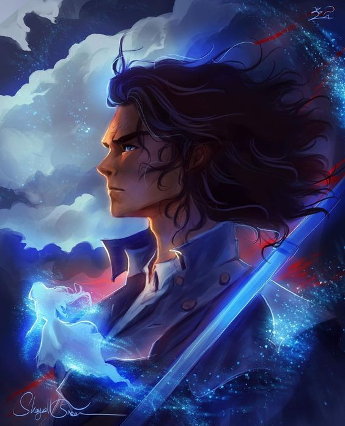
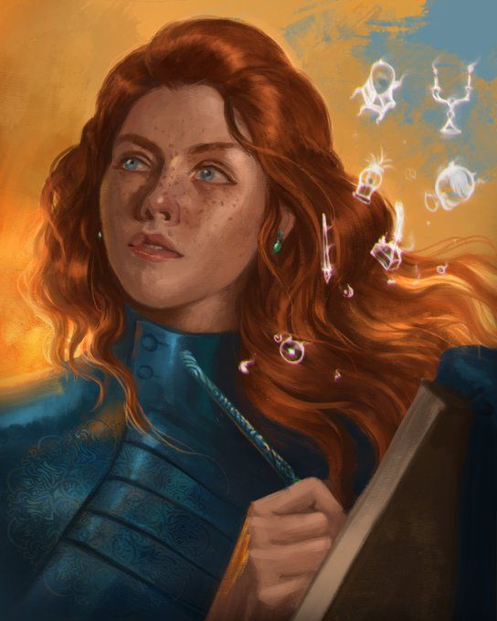
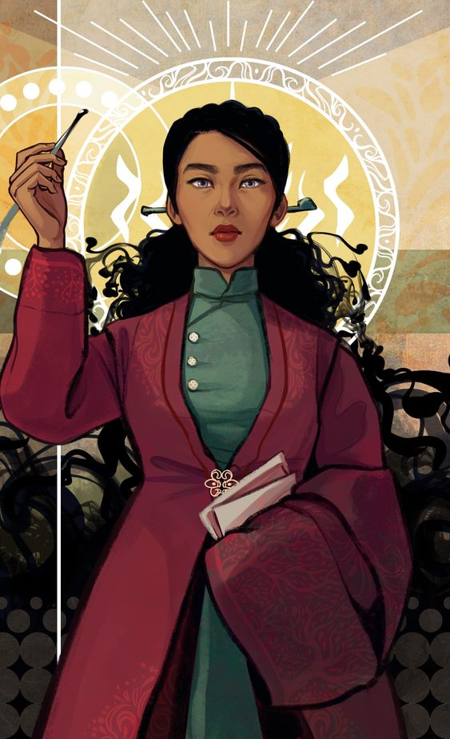
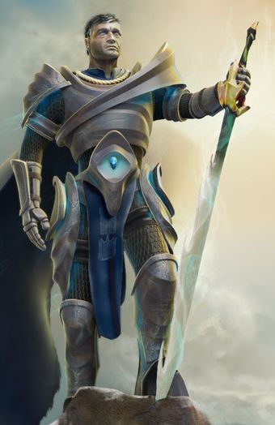
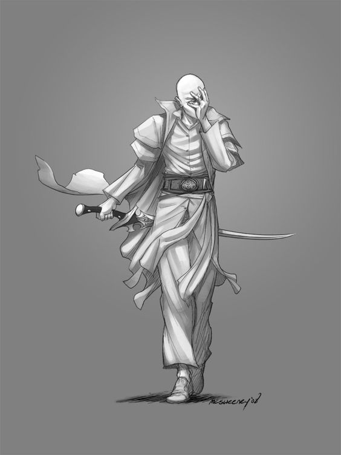

| Personajes | descripción | Imagen |
|---|---|---|
| Kaladin Stormblessed | Kaladin es un exsoldado y ahora un esclavo, experto en artes marciales y líder nato. Lucha contra la opresión y busca proteger a aquellos a su alrededor. |  |
| Shallan Davar | Shallan es una joven erudita y artista talentosa con secretos profundos. Su curiosidad la lleva a descubrimientos impactantes sobre la magia y la historia. |  |
| Jasnah Kholin | Jasnah es una estudiosa y poderosa usuaria de la magia. Es conocida por su sabiduría y enfoque racional en un mundo lleno de secretos y mitos. Imagen: Busca imágenes de Jasnah en ilustraciones de la saga y en representaciones artísticas en línea |  |
| Dalinar Kholin | Dalinar es un líder militar y un alto noble con un pasado marcado por la guerra y la pérdida. Busca unir a su gente y descubrir la verdad detrás de las visiones que lo atormentan |  |
| Szeth-son-son-Vallano | Szeth es un asesino letal y posee una espada juramentada que lo obliga a obedecer. Lucha con su conciencia mientras lleva a cabo actos atroces. |  |